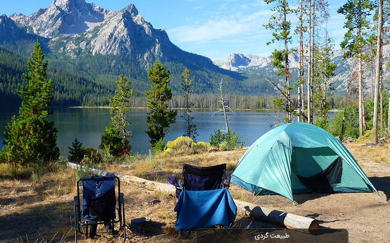
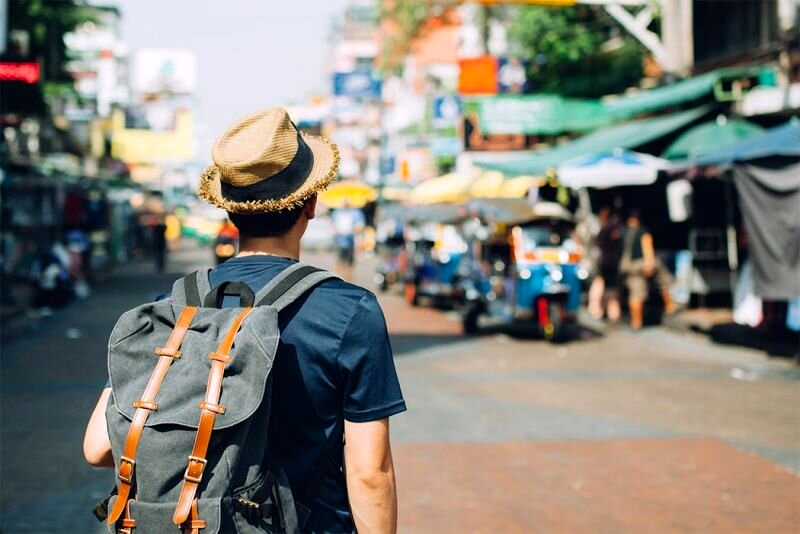

سرگرمی های من
موتور سواری

یکی از بهترین سرگرمی های متور سواری هستش که واقعا حال خوبی رو بهم میده
مهمونی
مهمونی یکی دیگه از تفریح ها و سرگرمی های من مهمونی . وقت گذراندن با دوستان صمیمی است
طبیعت گردی

طبیعت بهترین دوست و بهترین مکان تفرح و سرگرم شدن چه با دوستان چه با خانواده و چه تنها
گیم و بازی کردن
بازی های ویدئویی از اون نوع تفریح ها حساب میشه که هم دست جمعی با دوستان خوبه هم تنهایی و تک نفره
سفر

و یکی از بهترین تفریح ها برایه رفع خستگی سفر کردنه
فیلم دیدن
تماشا فیلم و سریال در کنار دوستان یا خانواده
| ردیف | سرگرمی | توضیحات | زمان انجام | میزان علاقه |
|---|---|---|---|---|
| 1 | موتور سواری | موتور سواری و دور زدن | عصر ها و شب ها | متوسط |
| 2 | مهمونی | مهمانی های خانوادگی و دوستانه | شب ها | موسط |
| 3 | طبیعت گردی | رفتن به طبیعت و ریلکس کردن | اخر هفته ها | زیاد |
| 4 | گیم | انجام بازی های انلاین و ویدئویی | شب ها | زیاد |
| 5 | سفر | سفر کردن به شهرهای مختلف | تعطیلات | زیاد |
| 6 | فیلم دیدن | تماشا فیلم و سریال | عصر ها | زیاد |